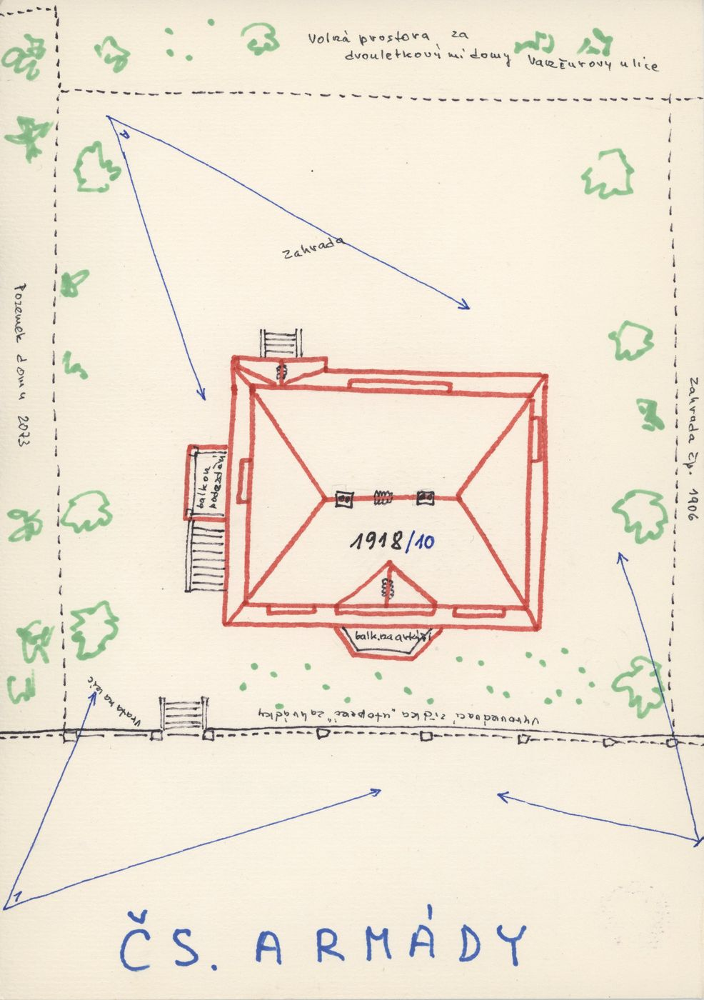
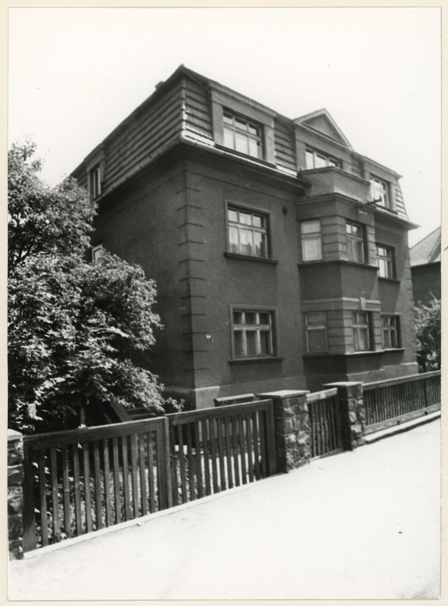
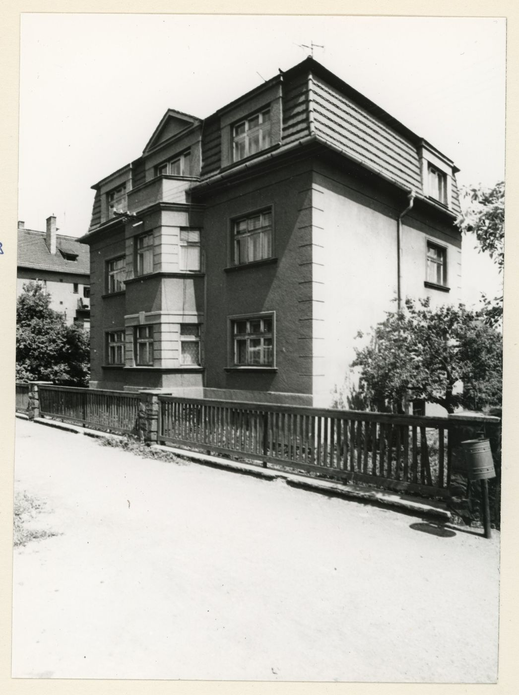
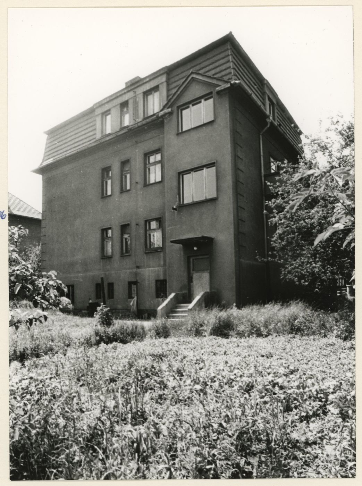
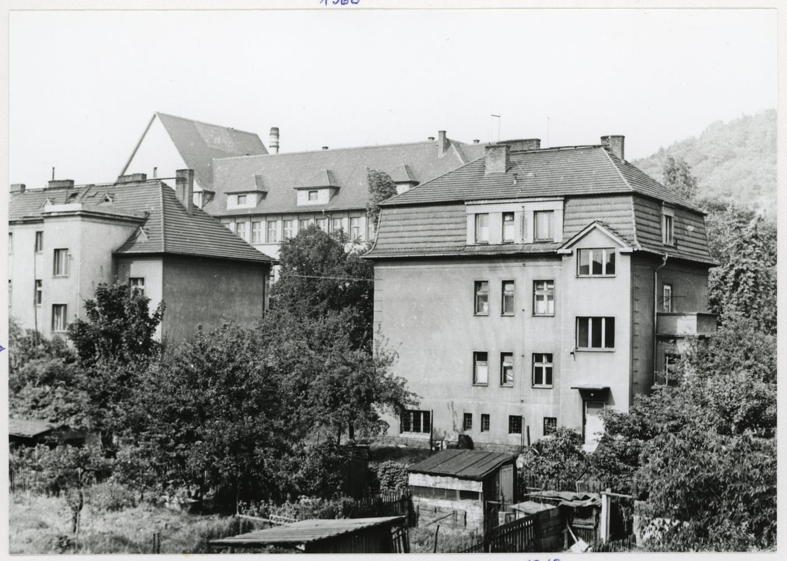
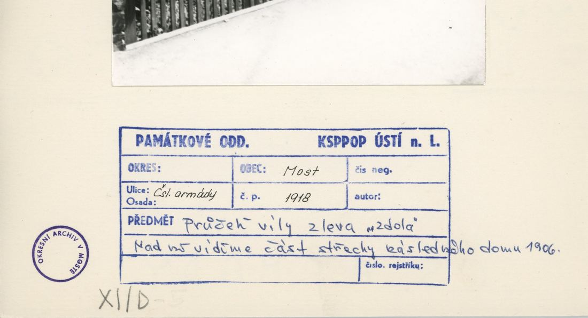
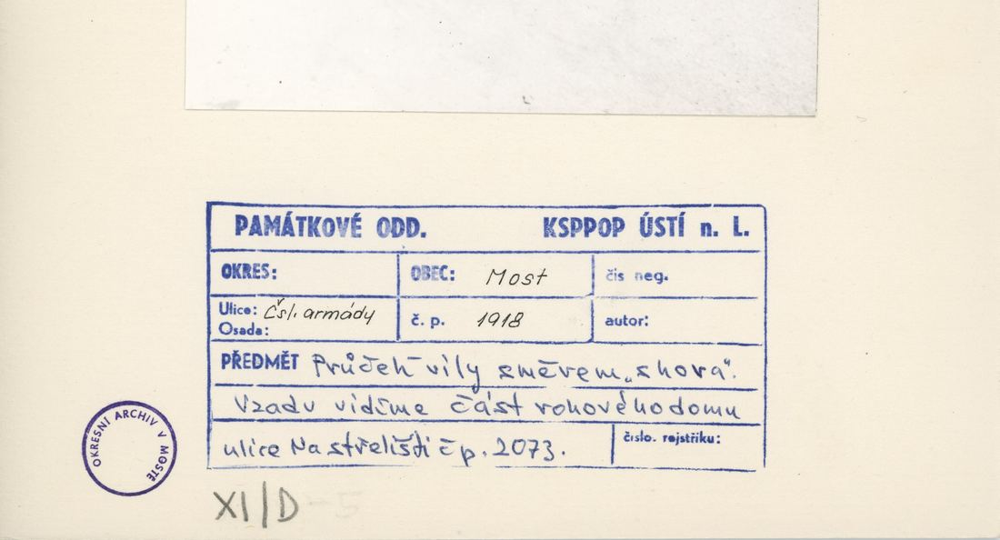
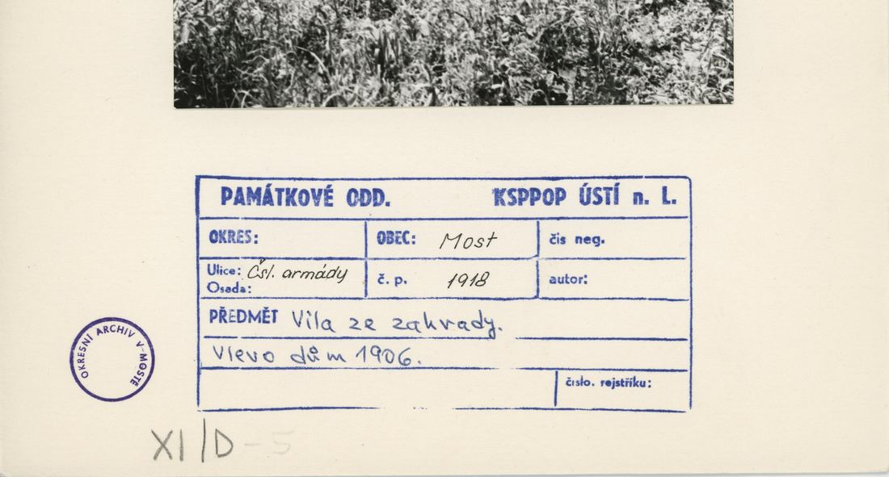
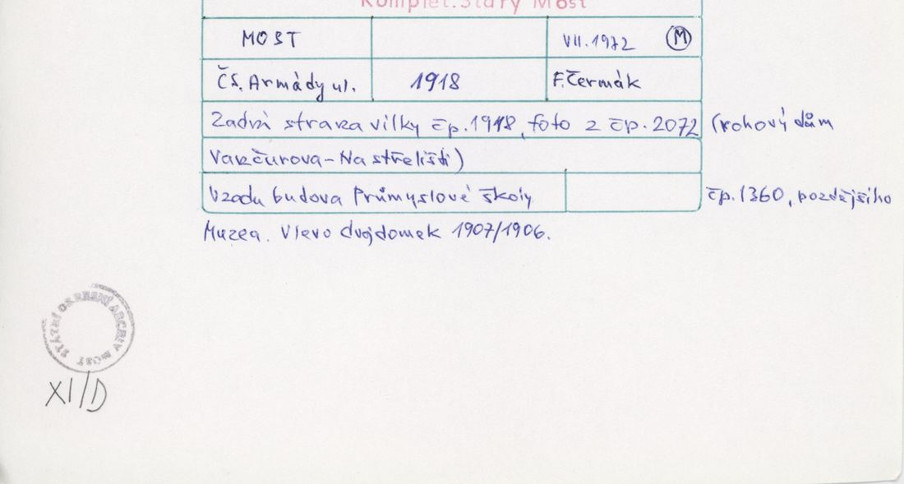
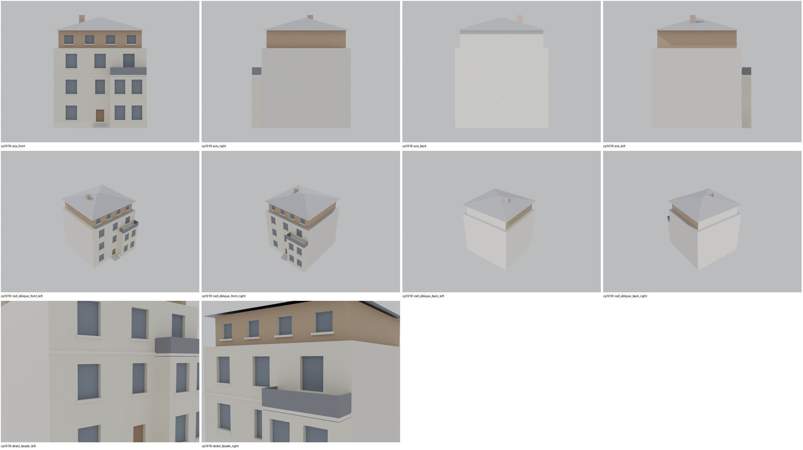

Identita domu
První vila za pozemkem 2073 (plán cp_1918_001: vlevo „pozemek domu 2073“, vpravo „zahrada čp. 1906“). Foto cp_1918_001/002 (z ulice: 3 podlaží, dřevem obložené podkroví, arkýř s balkonem), cp_1918_003 (ze zahrady), cp_1918_004 (zadní strany vil z 2072, vzadu muzeum 1360).
Použité prameny: cp_1918_001 PLANE; cp_1918_001..004 PHOTO; cp_1906,1914,1918_001 PHOTO.
GIS: bez GIS půdorysu – poloha v řadě odvozena. V oblasti „Cs_Armady“ je dům veden podruhé se stejnými přílohami.
Prameny (11 příloh)
Všechny přílohy domu v databázi Libuše, každá otevřená a zapsaná v plan_search.json. Stav rešerše plánů: found; situační/střešní náčrt (ruční, nekótovaný, PLANE,BW) – není stavební výkres; půdorysné rozměry z GIS nebo odhad. Kliknutím otevřete větší náhled.


situační náčrt
SHA-256 4eef196f7709…

fotografie
SHA-256 74600388a0d3…


fotografie
SHA-256 c551c46c26e4…


fotografie
SHA-256 4d01312d33c4…


fotografie
SHA-256 feaca789c3d4…


fotografie
SHA-256 b18e1fb78eff…

archivní karta (rub) · výřez textu
SHA-256 918eb097ee1f…


archivní karta (rub) · výřez textu
SHA-256 d95a4d0c6c0d…


archivní karta (rub) · výřez textu
SHA-256 2465d6942e13…


archivní karta (rub) · výřez textu
SHA-256 c571e372e98a…


archivní karta (rub) · výřez textu
SHA-256 28d774311d9f…
Model
| Revize modelu | r3 (zachované revize: r1, r2, r3) |
|---|---|
| Poloha | odhad: sekvence podle orientačních čísel |
| Šířka průčelí | 11,50 m |
| Výška okapu | 9,90 m (odhad) |
| Podlaží | 3 |
| Střecha podle pramenů | valba s dřevěným podkrovním patrem |
| Střecha v modelu | hlavní hmota s plochou horní deskou, šikmá střecha je na vedlejší hmotě (attic) |
| Otvory | 15 |
| Vikýře / vedlejší hmoty | 0 / 2 |
| Polygonů | 260 |
Zdroje rozměrů, jak jsou zapsány v plánu modelu
| Rozměry | HYPOTHESIS 11.5 x 11 m (no GIS) |
|---|---|
| Průčelí | photos cp_1918_001/002/003: 3 storeys, wood-clad attic storey under a low hip, bay with balcony on the street side |
| Střecha | low hip over the attic storey |
Kontrola: 10 povinných pohledů

Nálezy
- 3 podlaží + dřevěné podkrovní patro pod nízkou valbou, arkýř s balkonem, vstup se 4 stupni – odpovídá cp_1918_001/002
- balkonová deska protínala horní plochu arkýře -> černý pás (detail_facade_right); opraveno v r3 (deska +2 cm)
- r3: balkonová deska 2 cm nad arkýřem – bez z-fightingu (detail_facade_right); podkrovní dřevěné patro, nízká valba, vstup se 4 stupni
Opravy
- r3: balkon
Hypotézy
Vše níže je model_hypothesis, provisional, locked: false.
- půdorys 11,5 × 11 m odhad
- poloha: sekvence za 2073 (hypotéza)
- výšky odhad
- entrance centred on the street side (photo shows a side entrance with stairs: uncertain)
- all storey heights, opening sizes and roof pitches are estimates from photographs (model_hypothesis, provisional, locked=false)
- r3: balcony slab lifted 2 cm above the bay top
Soubory
- Model čp. 1918, GLB
- Pracovní složka: F:\MOST\output\zatecka_street_claude_2026-10-17\houses\cp1918\
plan_search.json,geometry_plan.json,README.md,texture_handoff_spec.json,r3/cp_1918_G_r3.blend,r3/qa/qa_review.json